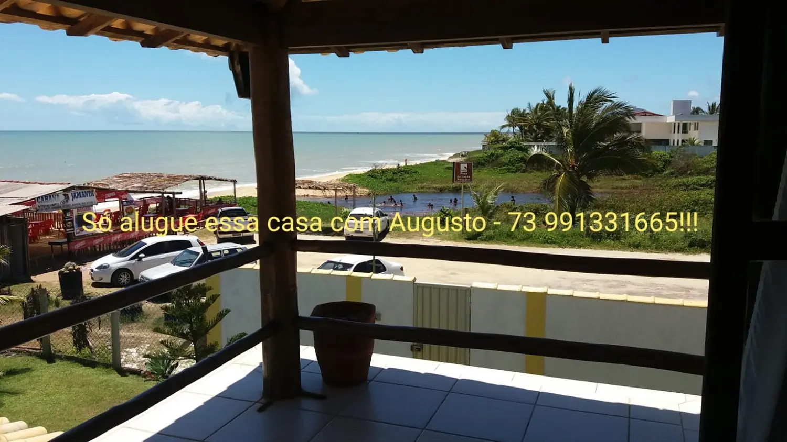
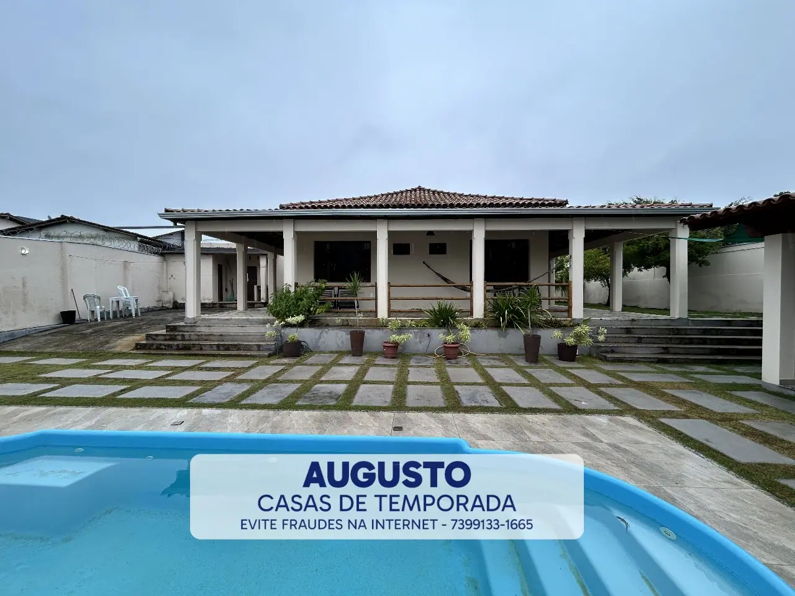
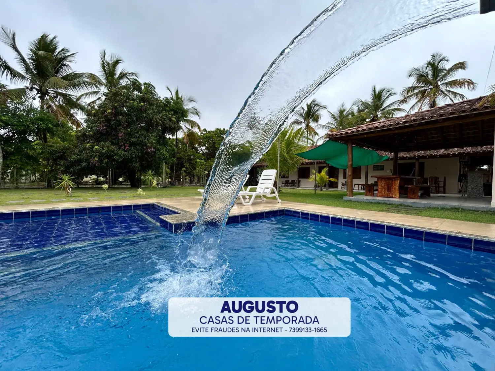
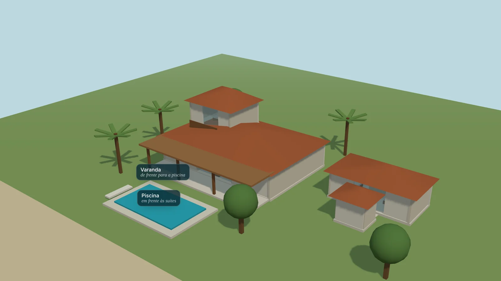

Prado, sul da Bahia
Todas com piscina, direto com o dono. Toque numa casa para ver fotos, planta 3D e datas.
Escolha a casa, ou deixe em qualquer uma, que o Augusto responde no WhatsApp.
as casas
Prado fica no extremo sul da Bahia, entre o rio e a praia, com as falésias de Cumuruxatiba logo ao norte. O Augusto aluga quatro casas aqui, todas com piscina e todas com ar-condicionado nos quartos.
A de seis quartos é pé na areia, no Basevi, com a praia da Lagoa Pequena no fundo do quintal. A de cinco quartos fica no centro, a cinquenta metros da praia e do Beco das Garrafas. As de sete e de quatro quartos ficam no Novo Prado, bairro tranquilo a poucos minutos a pé da praia.
O aluguel é direto com o dono, sem intermediário: você fala com o Augusto, combina as datas e ele confirma qual casa está livre.



escolha a sua
planta 3d
Um modelo 3D de cada casa, com os quartos, a área gourmet e a piscina no lugar. Gire, tire o telhado e veja como tudo se encaixa, no celular ou no computador.

Quartos, suítes, área gourmet, piscina e quintal — em 3D, na palma da mão.
Abrir a planta 3DAs plantas 3D são uma representação feita a partir das fotos e das medidas informadas pelo proprietário. Servem para entender a distribuição dos ambientes, não como planta técnica.
Na casa de 6 quartos, no Basevi, a praia da Lagoa Pequena começa no fundo do quintal.
galeria
vídeo
Dois minutos e meio gravados pelo próprio Augusto, com um trecho aéreo do bairro.
arredores
onde fica
Prado fica entre Porto Seguro e Caravelas, na costa sul baiana. Quem vem de avião normalmente chega por Porto Seguro e segue de carro. As quatro casas ficam na cidade, cada uma em um ponto — o endereço completo o Augusto passa na reserva.
As distâncias são as informadas pelo proprietário, a pé a partir de cada casa.
dúvidas
Fale direto com o Augusto, o dono das quatro casas. Ele responde pelo WhatsApp.